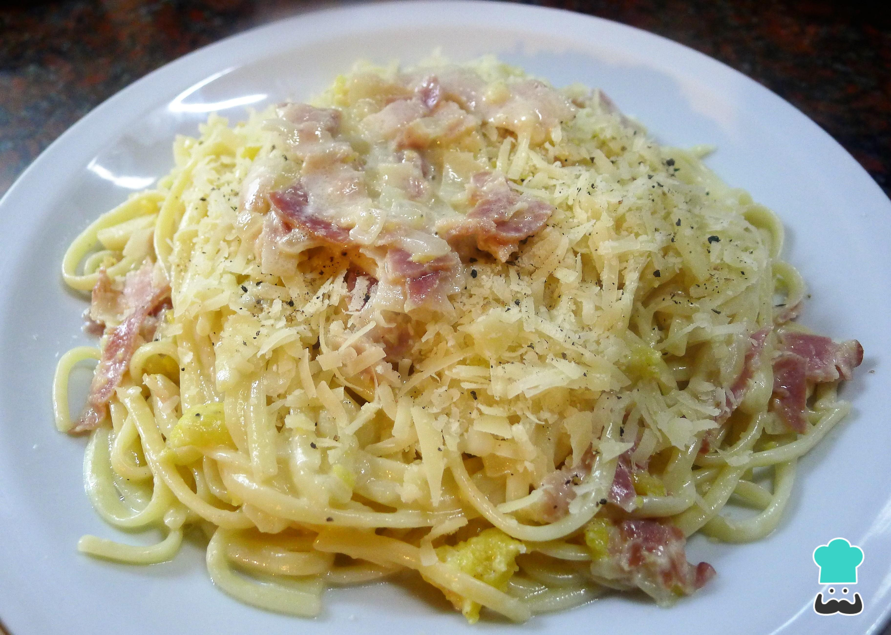

Pastas carbonara

Esta deliciosa receta es tradicional de Italia y es perfecta
para los amantes de la pasta, el queso y la tocineta. Estos
son los ingredientes principales de una de mis recetas favoritas.
Además de deliciosa, es muy fácil y rápida de preparar.
Adicional a esto, no gastarás muchos ingrediente y será ideal
para esos momentos de apuro donde necesitas algo rápido para almorzar.
Sé que la disfrutarás tanto como yo
Cabe resaltar que esta receta tiene variaciones de su original.
INGREDIENTES
Para dos o tres porciones
- 500g de spaghettis,
- 250g de tocineta,
- 120ml de crema de leche,
- 200g de queso parmesano.
- Cebolla larga,
- Sal al gusto.
PASOS A SEGUIR
- Pica la tocineta en cuadros pequeños y ponlos a freir en un sarten.
- Cocina los spaghettis en agua bien caliente por al rededor de 20min, con abundante sal.
- Revuelve de manera constante los spaghettis para evitar que se peguen.
- Pica un poco de cebolla larga y ponla a freir junto con la tocineta.
- Cuando la tocineta y la cebolla estén cocinadas en el punto que desees agrega la crema de leche.
- Revuelve un poco para unir bien todos los ingredientes.
- A continuación, agrega el queso parmesano poco a poco hasta que se integre con la salsa.
- Agrega sal al gusto.
- Una vez cocidos los spaguettis, retiralos del agua y escurrelos bien.
- Agrega los spaguettis sobre la salsa y mezcla hasta que todo se haya incorporado bien.
- Sirve las pastas y agrega un poco de queso parmesano por encima.
Nota:
Si deseas puedes agregar otros tipos de queso a la salsa, por ejemplo, queso mozarella. Además
recuerda que se vale improvisar.
¡BUEN PROVECHO!